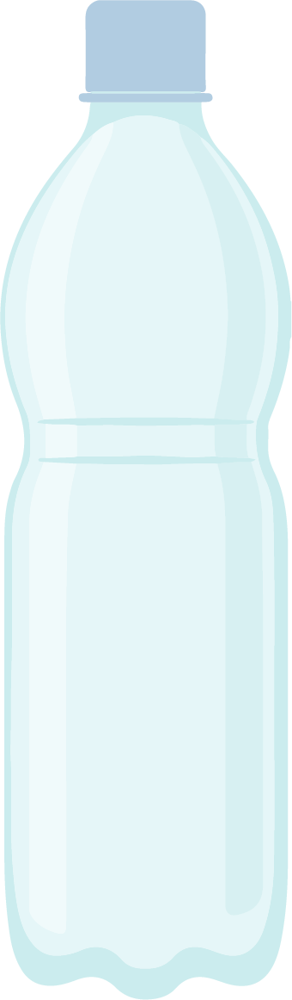
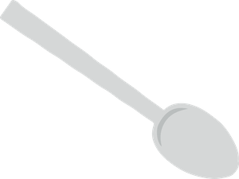
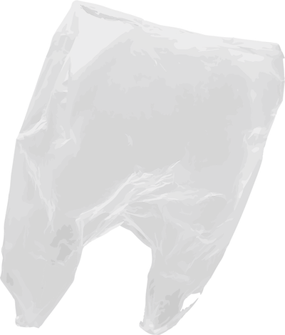
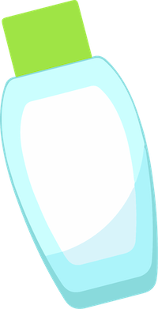
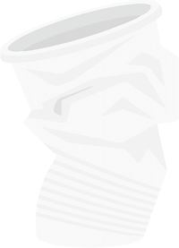
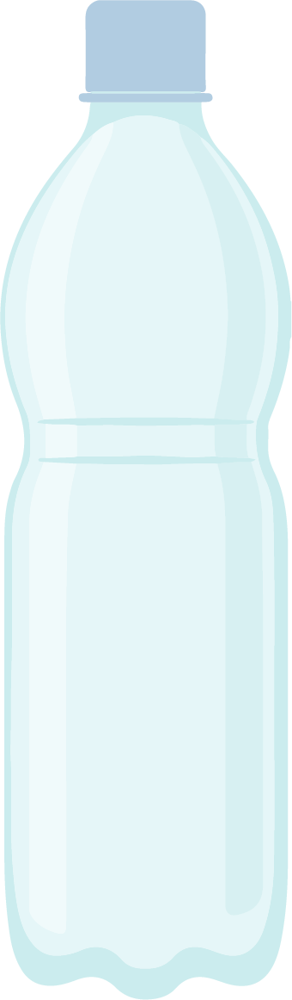
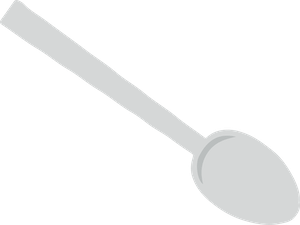
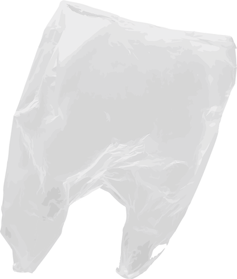
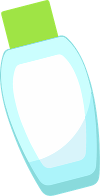
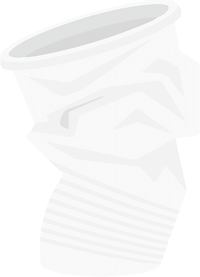
On the gentle, green, Earth planes, where concrete cities spread for miles, lived Earth Explorer who became friends with all the Kingdoms of the Seas. Every night, Earth Explorer snuggled into bed and drifted off to sleep. This was a part of their extremely powerful ability: dreaming. With every wink and nod, a fantastical, watery world emerged and revealed its depths.
Tumbling and rolling, the grand waves rose and fell. Yet, Earth Explorer swam and zigzagged freely like a fish through its waters. "Hello!" said Seahorse, Earth Explorer's friend and trusty guide, "Ready for another adventure?"
Together, they roamed the seas: swimming through the rainbow coral rainforests; tiptoeing through the mangrove nurseries; tangling and untangling their way through the kelp seabeds; side-stepping through spiky urchins.
But today was a special day. Seahorse came to Earth Explorer with a discovery in hand. “Ocyan City,” Earth Explorer read from a crumpled map with faint and smudged ink, "this is definitely written in the human language. However, I have never heard of this, 'Ocyan City' before."
“Precisely," Seahorse replied, "and it is made of a very special material. Try touching it.”
Earth Explorer felt the parchment, gawped. “It’s completely dry! Is this magical paper?!”
“I believe it is so.” Seahorse said. “I also have reason to believe that 'Ocyan City' is somewhere in the Seas, and that this paper most likely originates from there.”
“How exciting!” Earth Explorer said, “We must find this 'Ocyan City' and return the map to its rightful owner.”
And so they were on their way to somewhere they had never been before, somewhere further than they had ever dared travel into the Deep. Seahorse suggested searching where the map had been found, and so they travelled to a warm and temperate coral reef of the Near Lands.
“Have you seen anything like this before?” They tirelessly asked every reef resident, until one pointed out that Parrotfish had some similar paper, so off they went for a visit in the hopes to find out more.
"Go away!” grumbled Parrotfish, “Finders keepers, losers weepers. That is the Ocean Law.”
“Please, Parrotfish, just a quick glance? We promise to give it back straight away," said Earth Explorer.
But Parrotfish was not convinced. "What if you take it away and then leave me with nothing?”
“Is there anything we can offer you in exchange?” Seahorse pleaded.
“Hmm," Parrotfish tried to think of something impossible, "Lately, the residents here have been going missing. Some say it's sharks, or strong currents; but I think it's to do with all those human objects floating around. If you can find out what's going on, you can not only look at the paper, but keep it."
The parrotfish pointed them to the region in the Coral Reef where Earth Explorer and Seahorse discovered an entire blanket of human objects. Among it, they noticed some animals struggling to move - could it be a trap?
Earth Explorer and Seahorse quickly swam towards the blanket, and as they got closer, Earth Explorer realised what the human objects were: rubbish. Old shoes, plastic straws, tin cans, bottle tops, even some banana peels. The plastic bags were what most of the animals seemed to be trapped inside of. One-by-one, Seahorse and Earth Explorer pulled the animals out of the rubbish as carefully as they could, and made sure not to touch the Coral Reef directly as it would harm the Corals.
They returned to Parrotfish with the animals that had gone missing, and Parrotfish handed over the piece of parchment in glee. On it was a clue, which Seahorse immediately recognised, “We need to head to the Middle North!”
When Seahorse had last been to the Middle North a long, long time ago, the waters were turquoise-blue, and dappled with golden rays of the sun filtered by plankton. Wondrous sea animals of all types, sizes, and colours often visited this place as their holiday destination. The darting schools of fish smelled clean water, much like humans breathing in fresh air.
As they arrived, Seahorse looked sad. Those wonderful sights and smells were no more; the murky waters were dark and bitter. Where were all the sea animals? Why was the water no longer clear? How could the sun not shine through? All that remained were tiny bits of plastic scattered all around, glittering wickedly and without sound.
“There is no one to ask anything to. All around us is rubbish. How will we be able to find 'Ocyan City' now?” Earth Explorer was close to tears.
“Don’t worry," Seahorse stayed strong for both of them, "we are heading in the right direction. I can feel it. Let us look slowly for clues.”
They followed the plastic bits like they were a trail, and helped distressed sea-animals along the way, many of whom were trapped and troubled by the rubbish. They came to learn how the litter ended up in the ocean: often blown by the wind or washed into the sea by the rain after being left around by humans. Earth Explorer and Seahorse even spent some time on land (Seahorse stayed in a water-filled helmet that Earth Explorer found) where they picked up rubbish off streets, beaches, and roads.
Earth Explorer and Seahorse soon became famous as the quirky Eco-Warriors of the century. Humans began to stop littering and recycle plastic items responsibly. Some even joined them in picking up the rubbish that others left behind.
“Wahrrhh, it’s broken”, sobbed a nearby toddler.
Glancing over, Earth Explorer and Seahorse caught sight of a piece of magical paper sticking out the toddler's broken sandcastle. They rushed over and helped to pat the sandcastle back in place in exchange for the parchment. They held the new parchment over theirs and Parrotfish's, and a big X began to appear: it was the final and most important clue!
"This is it!" Earth Explorer and Seahorse said together. They splashed back into the waves and swam as quickly as they could towards 'Ocyan City'. Upon arriving at the marked location, however, Seahorse could only say, “there must be some mistake.”
Of all the places in the Ocean they had been, here was by far the worst. Everywhere they looked was surrounded by floating garbage. They saw plastic bags, six pack rings, bottles, bottle caps, toothbrushes, forks, knives, rope, and cutlery amongst other items, some of which were too small to identify. A terrible thought occurred to both of them: what if the map was not a mistake? What if 'Ocyan City' was taken over by rubbish? Had they come too late?
“What’s that gurgling sound?” Earth Explorer alerted.
The sound of water whirling was getting louder, and louder, and louder. The currents around them began to form a spiral, and before they could escape, they were pulled in...
The spiral of water was getting faster and faster. Their vision blurred as they spun around. They felt themselves being lurched deeper….
And deeper...
And deeper...
Suddenly, they were spat out in front of a Temple doorway.
'Ocyan City' had been lost for years before now. Located under the Whirlpool, it was overtaken with rubbish every day. This was a blessing and a curse:
An ancient being once placed the Whirlpool above Ocyan City to protect it from discovery. This also meant that the Whirlpool would bring in all sorts of materials from shipwrecks. In the beginning, the King and Queen of Ocyan City would claim treasure to keep the civilisation prosperous. However, in recent years, they noticed that shipwrecked goods were no longer entering their City. Instead, a flood of litter rushed through, eventually overtaking everything. So that their streets could stay empty, they used the rubbish to cover their homes.
The rubbish never cleared, nor did it decompose like other materials had. Sometimes the residents who handled the materials became ill. It was later discovered by their Researchers that plastic, which made up the majority of their rubbish collection, was a toxic material. The beautiful metropolis which had been around for millennia was on the brink of destruction.
Until now.
Earth Explorer and Seahorse had cleared away so much rubbish in a day, with the help of all their human friends, that considerably less rubbish had poured through the whirlpool into 'Ocyan City'. As time went on, their heroic deeds saved Ocyan City's kingdom from collapse.
The ocean is our home, for we all live on the same planet whether on Land or Sea. Small acts of kindness, whether it's picking up the rubbish you see, making sure to recycle responsibly, or spreading the word to friends and family, go a long way. To Earth Explorer, wherever you are, thank you. Please continue to explore the Oceans and its mysteries, for there will be many more to come.